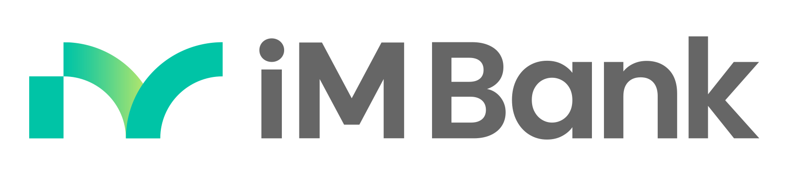

두 개의 세상, 계좌 그리고 지갑
스테이블코인·CBDC 시대, 전통 은행이 알아아 할 12가지
들어가며 - 왜 '두 개의 세상'인가
지난 수백 년 동안 은행 앱의 잔고는 단 하나의 의미만을 가졌습니다. 그것은 은행이 고객에게 갚겠다고 약속한 숫자였습니다. 통장, ATM 화면, 모바일 앱 잔고는 표현 매체가 달랐을 뿐 본질은 같았습니다 - 은행에 대한 청구권(claim). 고객이 "내 돈"이라 부르는 것은 사실 은행의 부채였고, 그 부채는 예금자보호제도와 중앙은행의 최종대부자 기능, 그리고 은행감독 체계라는 삼중의 신뢰 장치 위에 얹혀 있었습니다.
스테이블코인과 CBDC가 일상에 들어오는 순간, 같은 은행 앱 안에 전혀 다른 종류의 숫자가 함께 등장합니다. 그것은 누구의 약속도 아닌, 토큰 자체로 가치를 운반하는 디지털 사물(bearer instrument)입니다. 잃어버리면 돌려줄 사람이 없고, 압수할 사람이 없으며, 적어도 기술적으로는 누구의 허락 없이 움직입니다.
계좌의 세상은 약속의 화폐가 사는 곳이고, 지갑의 세상은 사물의 화폐가 사는 곳입니다.
이것이 '두 개의 세상'입니다. 계좌의 세상은 약속의 화폐(promise money)가 사는 곳이고, 지갑의 세상은 사물의 화폐(thing money)가 사는 곳입니다. 두 세상은 같은 화면에 표시되지만, 그 뒤에서 작동하는 회계, 법, 리스크, 신뢰의 메커니즘은 완전히 다릅니다.
사실 이 이중성은 오프라인에서는 오랫동안 존재해왔습니다. 주머니 속 현금은 사물의 화폐였고, 통장의 잔고는 약속의 화폐였습니다. 다만 두 세상은 물리적으로 다른 장소에 있었습니다 - 하나는 주머니에, 하나는 은행에. 디지털 화폐 시대의 진짜 사건은 두 세상이 새로 생긴다는 것이 아니라, 이미 있던 두 세상이 처음으로 같은 화면 위에 나란히 놓인다는 것입니다.
오랜 은행 경력을 가진 분들에게 가장 어려운 일은, 이 변화가 기능의 추가가 아니라 제도의 분기라는 사실을 받아들이는 일입니다. 본 글은 그 인식 전환을 위해 반드시 알아야 할 12가지 항목을 정리합니다. 앞의 네 가지는 전통적 은행 원장의 근간이 어떻게 흔들리는지를, 다음 다섯 가지는 그 균열에서 새로 나타나는 사실들을, 마지막 세 가지는 화폐 분류의 차이와 우리 자신의 인식 프레임을 다룹니다.
I. 무엇이 깨지는가 - 전통 은행 원장의 네 가지 전제
1. 원장(Ledger)의 단일성이 깨집니다
은행은 역사적으로 원장을 독점적으로 쓰는 기관으로 정의되어 왔습니다. 메디치 가문의 복식부기 이래 5세기 동안, 은행의 본질은 "기록할 권한과 그 기록을 보증할 책임"이 한 몸으로 묶여 있는 것이었습니다.
지갑의 세상에서는 이 전제가 무너집니다. 토큰은 외부 블록체인의 원장에 존재하고, 은행 앱은 그 원장을 조회해서 보여주는 뷰어일 뿐입니다. 자기 장부가 아닌 외부 장부에 적힌 숫자를, 자기 화면에 자기 고객 자산으로 표시해야 합니다. 이것은 회계 역사상 한 번도 없던 일입니다 - 이중장부도 신탁장부도 아닌, 권한 없는 외부 장부의 표시입니다.
가장 먼저 인식해야 할 것은 통제권의 비대칭입니다. 은행은 표시할 수 있지만 변경할 수 없고, 보여줄 수 있지만 보증할 수 없습니다. 이 새로운 비대칭성을 회계기준, 내부통제, 분쟁대응 절차에 어떻게 반영할 것인가 - 이것이 디지털 자산 시대 은행 운영의 첫 번째 과제입니다.
2. 부채-자산 이분법이 깨집니다
전통적 은행 회계에서 모든 항목은 결국 부채(예금, 차입)이거나 자산(대출, 보유증권)입니다. 모든 숫자는 누군가에 대한 청구권 관계로 환원됩니다.
수탁 중인 고객의 토큰은 이 이분법 어디에도 들어가지 않습니다. 은행은 그것을 빌린 적이 없으니 부채가 아니고, 고객의 것이니 자산도 아닙니다. 회계상 부외 보관물(off-balance-sheet custody asset)에 가깝지만, 문제는 이것이 부수적 항목이 아니라 주력 상품이 된다는 점입니다.
이는 자기자본비율, 유동성커버리지비율(LCR), 순안정자금조달비율(NSFR) 같은 자본·유동성 규제 지표의 분모와 분자를 모두 흔듭니다. 부외 항목이 일상적으로 움직이는 상황은 바젤 III가 가정한 세계가 아닙니다. 한국채택국제회계기준(K-IFRS) 역시 IFRS IC가 2019년에 가상자산을 무형자산 또는 재고자산으로 본 해석을 두고 있을 뿐, 수탁 디지털자산에 대한 명확한 분류 기준은 아직 없습니다.
던져야 할 질문은 결국 이것입니다 - 부외 항목이 주력 상품이 되는 회계 구조에서, 우리 은행의 재무제표는 무엇을 의미하는가.
3. 가역성(Reversibility)이 사라집니다
이 변화는 운영부서와 컴플라이언스 부서에 가장 큰 충격을 줍니다. 보이스피싱 피해 입금 차단, 착오송금 반환, 직원 오조작 정정, 법원 명령에 따른 지급정지 - 지금까지 은행업의 거의 모든 분쟁대응 절차는 "되돌릴 수 있다"는 전제 위에 짜여 있었습니다.
온체인 거래는 그게 안 됩니다. 트랜잭션이 블록에 포함되는 순간 결제 종국성(settlement finality)이 발생하고, 어떤 권한자도 이를 되돌릴 수 없습니다. 그러면 지급정지·환수·분쟁조정이라는 은행업의 핵심 보호장치들이 작동하지 않는 영역이 같은 앱 안에 생깁니다.
금융소비자보호법이 지키고자 하는 핵심 가치 - 권리구제 가능성 - 가 이 영역에서는 기술적으로 보장되지 않습니다. 이를 비대칭적 소비자보호 환경으로 인식해야 합니다. 같은 고객, 같은 앱, 같은 금융사고지만, 어느 화면에서 일어났느냐에 따라 구제 가능성이 달라집니다.
이 균열을 메우려면 새로운 장치가 필요합니다 - 온체인 모니터링, 사전적 화이트리스트, 토큰 동결 기능을 갖춘 스테이블코인의 선별 채택, 사고 시 보험 또는 보상 적립금 등. 이는 단순한 시스템 추가가 아니라 영업 모델의 재설계입니다.
4. 가치 보증이 외주화됩니다
USDC 1토큰이 1달러로 표시되는 이유는 Circle이 그렇게 약속했기 때문이지 은행이 보증해서가 아닙니다. CBDC라면 발행 중앙은행이 보증합니다. 토큰화 예금이라면 발행 은행이 보증합니다. 어느 경우든 은행 앱은 자신이 보증하지 않는 가치를 자기 화면에 처음으로 표시하게 됩니다.
이는 신뢰의 전이(trust transfer)입니다. 지금까지는 고객이 "내 돈은 안전한가"라고 물으면 은행이 답할 수 있었습니다. 앞으로는 토큰 발행자, 준비자산 운용자, 블록체인 네트워크, 스마트컨트랙트 감사기관 등 복수의 신뢰 주체를 거쳐야 답할 수 있습니다.
은행은 이제 신뢰의 단일 보증자가 아니라 복수 신뢰체계의 통합 게이트웨이가 되어야 합니다. 어떤 발행자의 어떤 토큰을 자기 화면에 표시할지, 그 신뢰성을 어떻게 평가하고 모니터링할지, 발행자 디페그(de-peg) 사고가 발생했을 때 고객에게 어떤 책임을 질지 - 이것이 새로운 핵심 역량입니다.
이를 위해서는 전통적 신용평가 인프라가 발행자 신용평가(issuer credit assessment) 영역으로 확장되어야 합니다. 무디스나 S&P가 채권 발행자를 평가하듯, 은행은 자기 앱에 올라오는 모든 토큰 발행자를 평가하는 내부 체계를 갖춰야 합니다. 이는 외부 의존만으로는 해결되지 않는, 은행 고유의 새로운 리스크 인프라입니다.
II. 무엇이 새로 등장하는가 - 균열에서 솟아나는 다섯 가지 사실
5. 신용창출 메커니즘에 균열이 생깁니다
은행의 가장 큰 사회적 기능은 예금을 받아 대출로 신용을 창출하는 것입니다. 100원을 예금받아 90원을 대출하면, 그 90원이 다시 어딘가의 예금이 되고, 다시 81원이 대출되며 - 이 과정을 통해 통화승수가 작동하고 실물경제에 신용이 공급됩니다.
스테이블코인이 예금을 흡수하면 어떻게 될까요. 고객이 100만 원을 예금에서 빼서 USDC로 옮기면, 그 자금은 Circle이 보유한 단기 미국채와 일부 은행 예금에 머뭅니다. 그러나 원래 고객의 거래 은행이 그 자금에 접근해 신용을 창출하던 통로는 끊깁니다. 지역은행, 중소기업 대출 비중이 높은 은행일수록 영향이 큽니다.
CBDC도 마찬가지입니다. 한국은행이 직접 발행하는 디지털 원화에 시중은행 예금이 흡수되면, 시중은행의 자금조달 비용은 오르고 신용공급은 위축됩니다. 이른바 예금기반 잠식(deposit base erosion) 또는 은행 디스인터미디에이션 우려입니다.
BIS, IMF, 한국은행 모두 이 문제를 인식하고 2단계 모델(two-tier model) - 중앙은행이 발행하되 시중은행이 유통과 고객접점을 담당 - 을 기본 설계로 삼고 있습니다. 그러나 이것이 완전한 해결책이 아닌 완충 장치임을 알아야 합니다. 결국 자금은 어디론가 흐르고, 그 흐름이 전통 은행의 자금조달 구조와 순이자마진(NIM)에 미치는 영향은 장기적으로 지대합니다.
6. 국경이 사라집니다 - 통화주권과 자본이동의 재정의
전통 은행 송금은 SWIFT, 환거래은행망, 외국환거래법, 자본거래신고 의무라는 다층의 게이트를 통과해야 했습니다. 스테이블코인 송금에는 이 게이트가 작동하지 않습니다. 지갑 주소만 알면 24시간, 수수료 몇 달러, 분 단위로 국경을 넘습니다.
이는 단순한 편의성 향상이 아니라 통화주권의 침식입니다. 신흥국에서는 이미 자국 통화 가치 하락기에 USDC, USDT가 사실상의 디지털 달러화(digital dollarization)를 가속화하고 있습니다. 한국 같은 중간 규모 개방경제에서도, 외환위기나 급격한 자본유출 상황에서 스테이블코인이 새로운 우회 경로가 될 가능성이 있습니다.
이 흐름은 두 개의 정책 긴장을 만듭니다. 하나는 외국환거래법과 가상자산이용자보호법의 충돌 - 같은 자금 이동이 어느 법의 규율을 받는가입니다. 다른 하나는 AML/CFT 효과성의 역설 - 분산원장의 투명성이 오히려 트래블룰(travel rule) 등 추적 인프라를 더 정밀하게 만들 수도 있다는 점입니다.
iM뱅크처럼 무역금융, 외환업무, 기업금융을 다루는 은행은 이 영역에서 새로운 서비스 기회와 규제 위험을 동시에 마주합니다. 특히 한국 정부가 원화 스테이블코인 정책을 본격화할 경우, 외환·국제결제 분야에서 시중은행의 역할 재편이 가장 빠르게 일어날 가능성이 높습니다.
7. 화폐가 프로그램 가능해집니다
전통적 화폐는 무조건적입니다. 1만 원짜리 지폐는 그것을 가진 사람의 어떤 사용에도 동일하게 작동합니다. 토큰은 다릅니다. 스마트컨트랙트와 결합되면, 화폐 자체가 조건을 갖습니다 - 언제, 누구에게, 무엇을 위해서만 사용 가능한 돈이 가능해집니다.
이는 두 방향으로 작동합니다. 산업적으로는 무역금융, 신탁, 에스크로, 정부 재난지원금, 보조금, 바우처, 마일리지 등 무수한 응용 가능성을 엽니다. 정치사회적으로는 돈에 의한 행동 통제라는 디스토피아적 시나리오를 엽니다 - 정부가 사용처와 시한을 지정한 화폐, 기업이 직원의 사용처를 통제하는 임금, 부모가 자녀의 소비를 제한하는 용돈 등입니다.
화폐가 코드가 되는 순간 은행은 코드를 다루는 기관이 됩니다.
여기서 인식해야 할 핵심은, 화폐가 코드가 되는 순간 은행은 코드를 다루는 기관이 된다는 점입니다. 스마트컨트랙트 감사 역량, 코드 리스크 평가, 프로그램 가능한 상품의 컴플라이언스 검증 - 이는 전통 은행의 인재 풀과 조직구조가 갖추지 않은 역량입니다. 핀테크와 IT 인력을 조직 깊숙이 들이고, 의사결정 구조에 코드 이해도를 가진 인사를 배치하는 조직의 디지털 재편이 동반되어야 합니다.
8. 프라이버시의 역설이 나타납니다
전통 계좌는 폐쇄적입니다. 은행만이 거래 내역을 보고, 금융실명제와 개인정보보호법, 신용정보법이 그 보호 체계를 만듭니다.
지갑의 세상은 정반대입니다. 퍼블릭 블록체인의 거래 내역은 본질적으로 공개정보입니다. 누구나 볼 수 있고, 분석할 수 있으며, 영구히 지워지지 않습니다. 개인정보의 영구적 공개성이라는 새로운 프라이버시 환경이 같은 앱 안에 공존합니다.
CBDC는 이 스펙트럼의 또 다른 끝점입니다. 중앙은행이 모든 거래를 잠재적으로 추적할 수 있는 구조는, 효과적인 자금세탁방지를 가능하게 하는 동시에 국가 감시 자본주의의 우려를 낳습니다. 유럽중앙은행(ECB)의 디지털 유로 설계는 이 문제를 깊이 다루며, 일정 금액 이하 익명성, 영지식증명(zero-knowledge proof) 기반 프라이버시 보존 등 다양한 절충안을 모색하고 있습니다.
자문해야 할 질문은 우리는 고객에게 어떤 프라이버시 약속을 할 수 있는가입니다. 같은 고객, 같은 앱이지만 한 화면(계좌)에서는 신용정보법이, 다른 화면(지갑)에서는 가상자산이용자보호법과 블록체인 자체의 공개성이 작동합니다. 고객에게 이 차이를 어떻게 설명하고 어떤 보호를 제공할 것인가는 법적 의무를 넘어 윤리적 책임의 영역입니다.
9. 지급결제와 청산 인프라가 재편됩니다
지난 50년간 한국의 지급결제 인프라는 한국은행 BOK-Wire+, 금융결제원, 카드망, 증권결제망 등 정교한 다층 구조 위에서 작동해왔습니다. 이 구조의 핵심은 시점 분리입니다 - 거래는 즉시 일어나지만, 결제(settlement)는 일정 시간 후 차감결제(net settlement) 또는 총액결제(gross settlement)로 마무리됩니다.
토큰화된 화폐와 자산은 이 구조를 원자적 결제(atomic settlement)로 바꿉니다. 거래와 결제가 같은 트랜잭션에서 동시에 일어납니다. 증권과 자금이 동시에 교환되는 DvP(Delivery vs Payment)가 진정한 의미에서 실현됩니다.
이는 자본 효율성을 극적으로 높이지만, 동시에 유동성 관리 구조를 근본부터 재편합니다. 차감결제 시점까지 활용 가능했던 일중 유동성(intraday liquidity)이 사라지고, 모든 거래가 즉시 자금 가용성을 요구합니다. BIS의 통합원장(unified ledger) 비전, mBridge·Project Agora 같은 국제 협력 프로젝트들은 이 새로운 결제 패러다임을 설계하는 작업입니다.
은행 재무팀과 자금시장팀의 일하는 방식이 근본적으로 바뀐다는 의미입니다. 이를 단순한 IT 프로젝트가 아니라 은행 자금흐름 구조의 재설계로 인식해야 합니다. 특히 도매CBDC(wholesale CBDC)가 본격화되면, 은행 간 결제 시장의 경쟁 구조와 마진 구조가 바뀝니다.
III. 새로운 분류학과 인식의 프레임
10. 새로운 경쟁자 지형
전통 은행의 경쟁자는 다른 은행이었습니다. 핀테크 시대에는 카카오·토스·네이버페이가 더해졌습니다. 디지털 자산 시대의 경쟁 지형은 한 단계 더 복잡해집니다.
스테이블코인 발행자(Circle, Tether, PayPal), 토큰화 자산 플랫폼(BlackRock의 BUIDL, Franklin Templeton의 BENJI), 디지털 자산 수탁기관(Coinbase Custody, Fidelity Digital Assets, Anchorage), 결제 네트워크(Visa·Mastercard의 스테이블코인 정산 통합), 빅테크의 디지털 지갑(Apple Wallet, Google Wallet의 토큰 지원 확장) - 이 모두가 예금자에게 직접 닿을 수 있는 경로를 갖기 시작합니다.
특히 주목할 흐름은 비은행 발행자의 사실상의 은행화입니다. Circle은 USDC 준비자산으로 단기 미국채를 운용하며 사실상 내로우 뱅크(narrow bank) 모델을 구현합니다. PayPal의 PYUSD, Visa의 토큰 정산은 결제망 자체에 화폐 발행 기능을 통합합니다. 이들은 은행 라이선스 없이도 화폐 발행과 유통의 핵심을 점유합니다.
한국 시장에서도 KDX 같은 분산형 컨소시엄, 카카오·네이버 진영의 토큰 사업 진출, 가상자산사업자(VASP)의 영역 확장 등이 비슷한 패턴을 만듭니다. 경쟁이 더 이상 동일 산업 내부에서 일어나지 않는다는 사실을 받아들여야 합니다.
11. CBDC, 스테이블코인, 토큰화 예금 - 화폐 분류학을 정확히 구별해야 합니다
자주 혼동되지만, 이 셋은 본질적으로 다른 화폐입니다. 이 차이를 기능적으로가 아니라 제도적으로 이해해야 합니다.
CBDC는 중앙은행의 부채입니다. 따라서 신용리스크가 없고, 가치 보증의 궁극적 책임 주체가 중앙은행입니다. 통화정책, 지급결제 안정성, 통화주권의 도구로 설계됩니다. 한국은행은 이미 모의실험을 거쳐 도매CBDC 중심의 단계적 도입을 검토하고 있습니다.
스테이블코인은 민간 발행자의 부채 또는 준비자산 보유자에 대한 청구권입니다. 발행자 신용리스크, 준비자산 운용리스크, 페그 안정성 리스크가 존재합니다. 시장 자율과 혁신의 영역이지만, 동시에 사적으로 발행되는 화폐 유사물이라는 역사적으로 위험한 카테고리에 속합니다(19세기 미국 자유은행 시대의 교훈을 떠올려 볼 일입니다).
토큰화 예금(tokenized deposit)은 양자 사이의 중간지대입니다. 시중은행의 예금을 토큰 형태로 발행한 것으로, 발행 은행의 부채라는 점에서는 전통 예금과 같지만 블록체인 위에서 움직인다는 점에서는 토큰의 특성을 갖습니다. JPMorgan의 JPM Coin, 싱가포르 Project Guardian의 다양한 시범사업이 이 모델을 구현합니다.
각 형태는 서로 다른 규제, 회계, 리스크, 비즈니스 모델을 요구합니다. 세 가지가 모두 디지털 화폐다라고 뭉뚱그려 말하는 순간, 가장 중요한 차이가 보이지 않게 됩니다.
iM뱅크처럼 시중은행 입장에서는 토큰화 예금이 가장 자연스러운 진입로입니다. 자기 부채를 자기 토큰으로 발행하는 것이므로, 회계와 리스크 관리에서 기존 체계와 가장 적게 충돌합니다. 동시에 외부 스테이블코인을 수탁 및 표시하는 역할도 병행해야 합니다. 두 트랙을 동시에 가는 이중 전략이 현실적입니다.
12. 우리 자신의 인식 프레임 - 다섯 개의 전환
지금까지 11가지 항목은 모두 외부적 변화에 관한 것이었습니다. 마지막은 내부적 변화 - 우리 자신의 인식 프레임입니다.
첫째, 기능 추가가 아니라 정체성 재정의의 문제입니다. "지갑 기능을 우리 앱에 붙이자"는 접근으로는 결국 위에 적은 균열들이 사고의 형태로 터져나옵니다. 차라리 처음부터 "우리 은행은 어떤 기록자에서 어떤 통합자로 이동하는가"를 묻는 편이 빠릅니다.
둘째, 불연속성을 인정해야 합니다. 디지털 자산은 기존 은행업의 자연스러운 확장이 아닙니다. 회계, 법, 리스크, 신뢰, 인재, 조직 구조 모든 면에서 기존 틀을 깨지 않으면 받아들일 수 없는 변화입니다. 점진적 진화의 비유는 위험합니다.
셋째, 상충하는 두 시간축을 동시에 살아야 합니다. 전통 은행 업무의 안정성과 규제 준수는 단기적으로 흐트러질 수 없습니다. 동시에 디지털 자산 시대의 새 역량은 빠르게 갖춰야 합니다. 하나의 조직 안에 수백 년의 시간과 몇 년의 시간이 공존합니다. 이는 조직 설계의 문제이자 의사결정 속도의 문제입니다.
넷째, 인재 구성의 스펙트럼을 넓혀야 합니다. 전통 은행 경력은 영업, 여신, 자금, 리스크, 컴플라이언스로 짜여 있습니다. 디지털 자산 시대에는 여기에 암호학, 분산시스템, 토큰 경제학, 스마트컨트랙트 감사, 디지털 신원 등의 영역에 대한 이해도가 의사결정 그룹의 평균에 들어와야 합니다. 이를 외부 위탁이나 컨설턴트에 의존하면 결정의 속도가 따라가지 못합니다.
다섯째, 문화의 변화를 동반해야 합니다. 은행 문화는 본질적으로 보수적이고 위계적입니다. 디지털 자산 시대의 의사결정은 빠르고 수평적이며 실험적입니다. 두 문화를 분리된 별도 조직으로 두는 모델(예: 디지털 자회사)도 있고, 기존 조직 안에 이식하는 모델도 있습니다. 어느 쪽이든 의식적인 개입과 보호 없이는 새 문화가 살아남지 못합니다.
결론 - 다시 정의되는 은행
지난 5세기 동안 은행은 기록을 독점적으로 쓰는 기관이었습니다. 메디치 가문에서 현대 시중은행에 이르기까지, 기록할 권한과 그 기록을 보증할 책임은 한 번도 분리된 적이 없었습니다.
스테이블코인과 CBDC가 만드는 변화의 본질은, 이 두 가지가 분리되기 시작한다는 데 있습니다. 은행은 이제 자신이 기록하지 않은 것에 대해 보여주고 보호하는 책임을 집니다. 기록자(recorder)에서 통합자(integrator)로, 단일 보증자에서 복수 신뢰체계의 게이트웨이로 이동합니다. 이 이동은 은행의 종말이 아니라 재정의입니다.
'두 개의 세상, 계좌 그리고 지갑'이라는 표현은 따라서 단순한 UI 비유가 아닙니다. 그것은 약속의 화폐와 사물의 화폐가 처음으로 같은 표면 위에 나란히 놓이는 사건의 이름이며, 동시에 은행이 자기 정체성의 어느 부분을 지키고 어느 부분을 새로 만들어야 하는지를 묻는 질문의 이름입니다.
전통 은행의 가장 큰 자산은 수백 년에 걸쳐 축적된 신뢰입니다. 그 신뢰는 디지털 자산 시대에도 여전히 결정적 경쟁력입니다. 다만 그것이 작동하는 방식이 바뀝니다 - 내가 보증한다에서 내가 보증할 수 있는 것을 정확히 골라 보여주고, 내가 보증할 수 없는 것에 대해서는 그 사실 자체를 정직하게 표시한다로. 이 미묘하지만 결정적인 전환을 먼저 자기 언어로 이해하는 곳에서, 다음 시대의 은행이 시작됩니다.
고객은 머지않아 자기 은행 앱을 열고 두 개의 세상을 동시에 마주하게 될 것입니다. 그 화면을 설계하는 사람들은, 그것이 단지 두 개의 탭이 아니라 두 개의 화폐 존재론이 처음으로 한자리에 만나는 자리임을 알고 있어야 합니다.